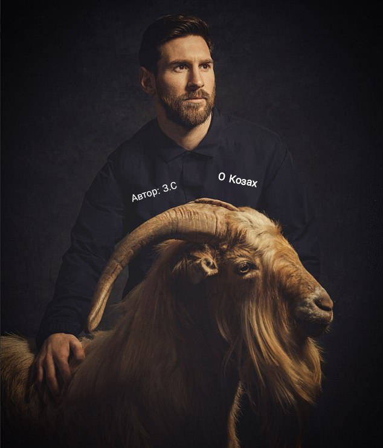
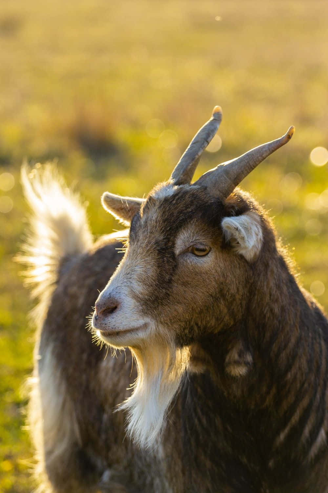
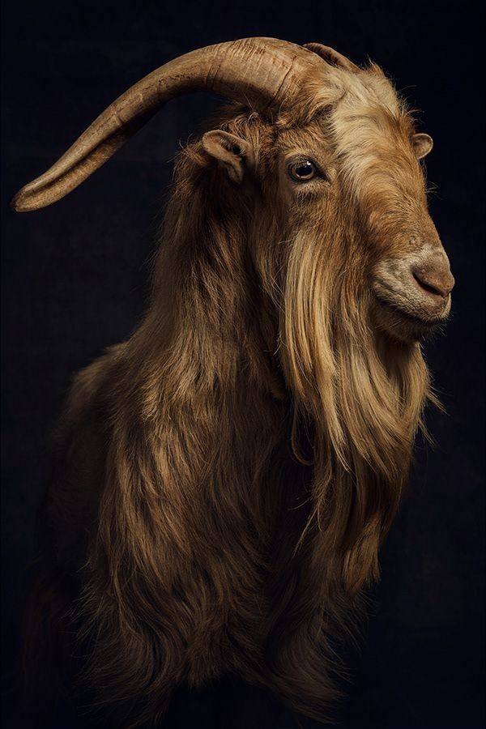
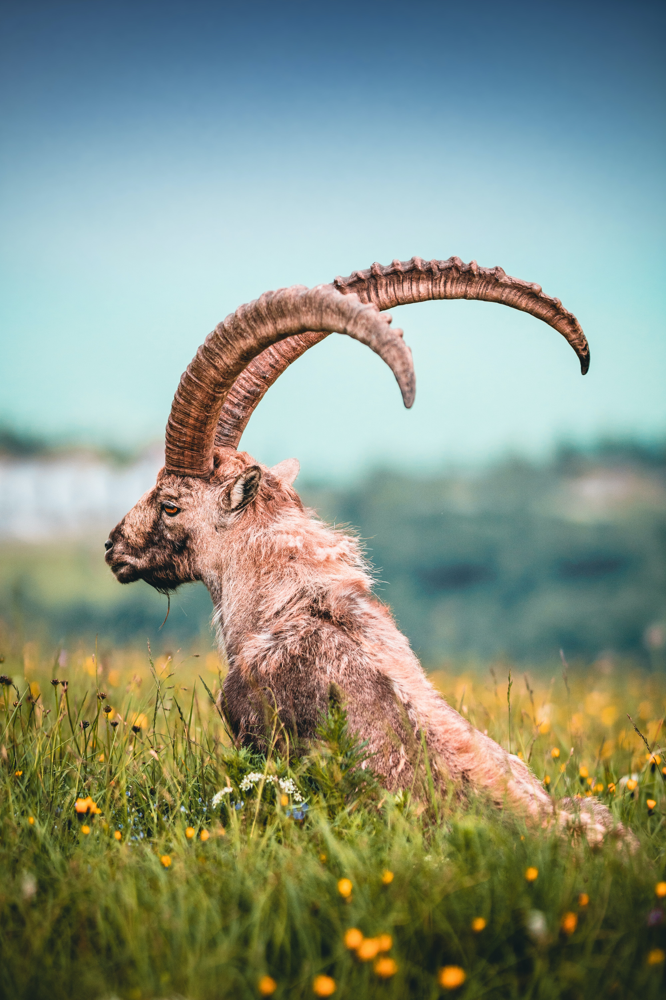
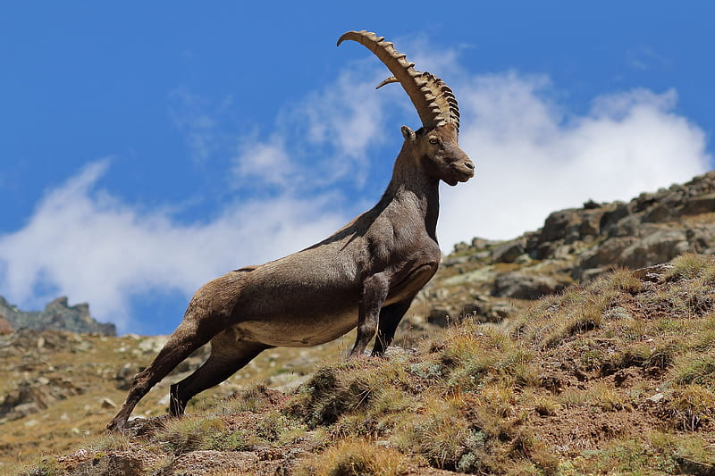
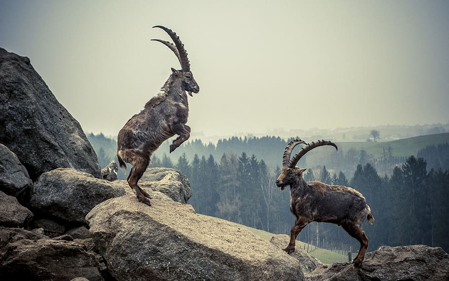
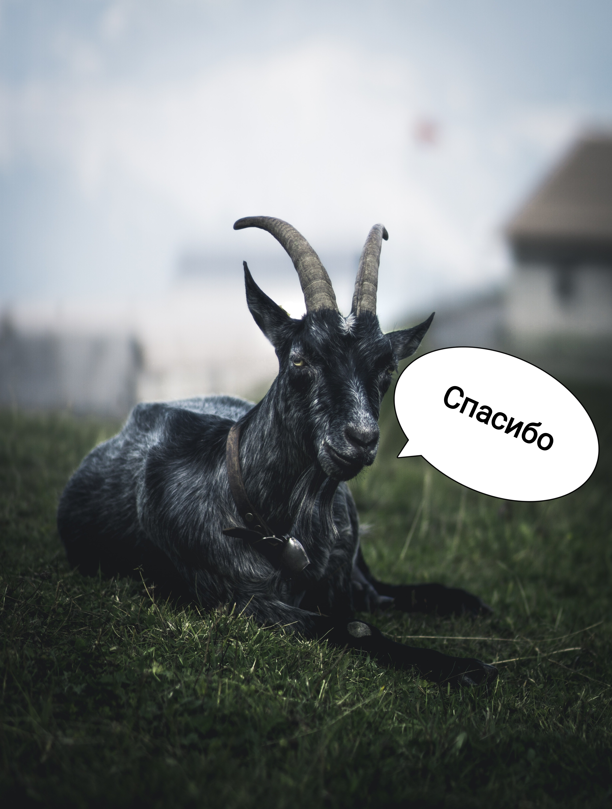

Эчки и молоко
Козы дают полезное молоко, богатое витаминами A, B, C и D. Оно укрепляет иммунитет, улучшает пищеварение и легко усваивается организмом.


Козы дают полезное молоко, богатое витаминами A, B, C и D. Оно укрепляет иммунитет, улучшает пищеварение и легко усваивается организмом.

Козы умные животные, могут узнавать хозяина, лазать по склонам и иногда по деревьям. Существует более 300 пород коз с разными особенностями.

Шерсть коз используется для изготовления теплой одежды, одеял и ковров. Мясо коз диетическое и богато белком.

Козы неприхотливы, легко приспосабливаются к разным климатическим условиям и помогают поддерживать экологический баланс на ферме.

Козы помогают человеку получать пищу, одежду и шерсть. Они важны для хозяйства и фермерских навыков.
